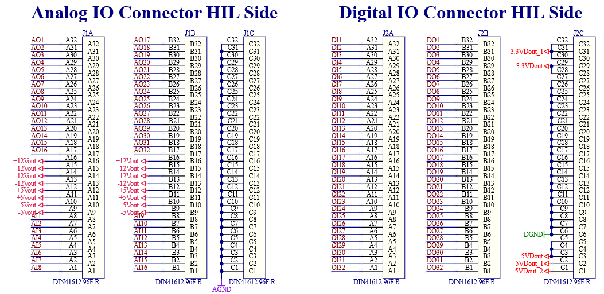
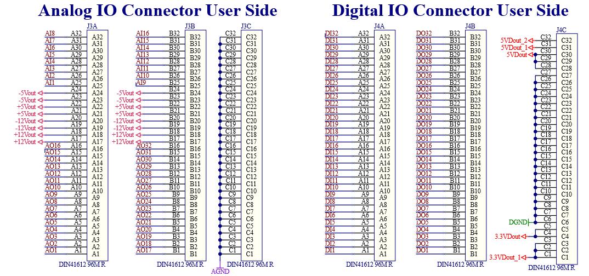
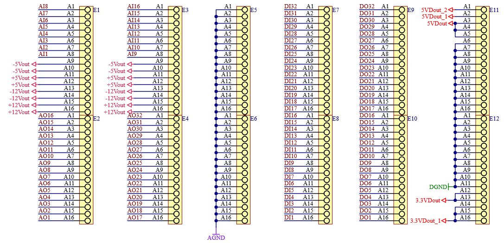

Pinouts
Pinout of the connectors found on HIL Breakout Board.
DIN41612 connectors
The DIN41612 connector pinout is given in Figure 1 and Figure 2.
Note that the pinouts are valid only if the Breakout Board is connected to a supported HIL device, and that 3.3 V, 5 V, and 12 V signal labels are provided as indication only, without any PSU capabilities.


Spring-cage connector array pinout
Pinouts for the spring-cage connector array given in Figure 3.
